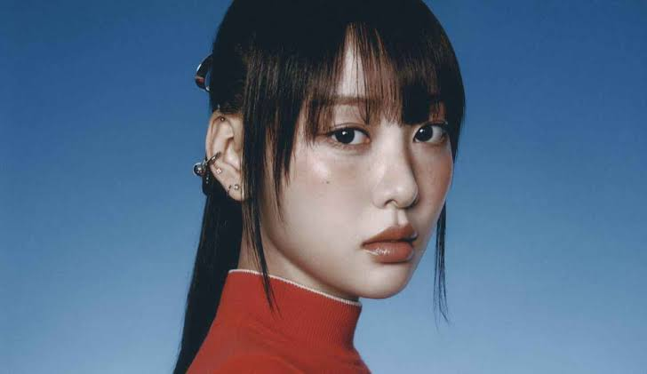

Yves
Por: Suzuki🌸
•Yves (Ha Soo-young) iniciou sua carreira no K-pop ao ser revelada em novembro de 2017 como a última integrante do grupo LOONA e líder da sub-unidade yyxy. Ela estreou com o marcante single solo "new", destacando-se rapidamente por seus vocais maduros, carisma e habilidades excepcionais de dança. Junto ao LOONA, alcançou sucesso global com lançamentos icônicos como "Hi High", "Butterfly" e "PTT (Paint The Town)". Após anos de sucesso, em 2023, Yves e as outras membras iniciaram uma batalha judicial contra a agência BlockBerry Creative para rescindir seus contratos. Vencedora do processo, ela assinou com a agência Paix Per Mil e iniciou sua carreira solo oficial em maio de 2024 com o EP "LOOP". Hoje, ela consolida sua identidade artística independente, explorando novos sons e participando da composição de suas músicas.🦢